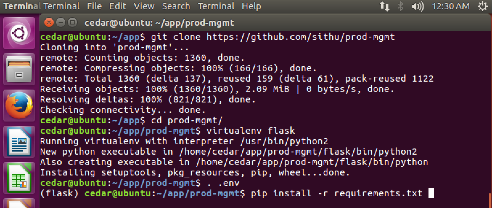
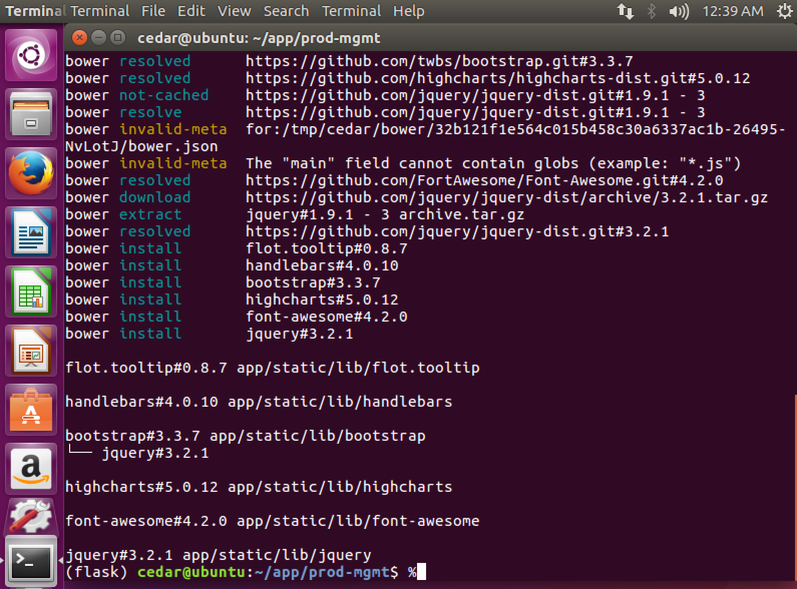

User Manual
Software requirements
- Although the application can run on any operation systems, this manual is target for Ubuntu Linux operation system.
- A reliable Internet connection on the server that you are installing.
- Either a static IP or dynamic IP assigned to the server.
- The network or router must allow TCP port
5000for incoming traffic to the server. - Check the server has installed Python 2.7.x.
python --version
- Check the bower package manager tool is installed.
bower --version

Hardware requirements
- Dual Core Intel or AMD CPU with 64-bit Architecture.
- 4 GB Memory.
- 20 GB SSD or SATA Hard Drive.
- Ethernet Port Network or Wifi
Installation
Execute the following commands in a Linux shell Terminal.
- Ping to check the Internet connection. Press Ctl+D to exit.
cedar@ubuntu:~/app$ ping www.google.com
PING www.google.com (172.217.6.68) 56(84) bytes of data.
64 bytes from sfo07s17-in-f68.1e100.net (172.217.6.68): icmp_seq=1 ttl=128 time=12.0 ms
64 bytes from sfo07s17-in-f68.1e100.net (172.217.6.68): icmp_seq=2 ttl=128 time=14.2 ms
64 bytes from sfo07s17-in-f68.1e100.net (172.217.6.68): icmp_seq=3 ttl=128 time=13.3 ms
64 bytes from sfo07s17-in-f68.1e100.net (172.217.6.68): icmp_seq=4 ttl=128 time=13.9 ms
^C
--- www.google.com ping statistics ---
4 packets transmitted, 4 received, 0% packet loss, time 3006ms
rtt min/avg/max/mdev = 12.046/13.386/14.210/0.844 ms
- Create a
appfolder under the current user home path. E.g. /home/cedar. Delete theappfolder to ensure there is no existing one.
cedar@ubuntu:~$ rm -rf app
cedar@ubuntu:~$ mkdir app
- Create a
backupfolder to store database backup files.
cedar@ubuntu:~$ mkdir backup
cd app- Go inside the app folder you just created.
cedar@ubuntu:~$ cd app
- Check the current path is under
/home/cedar/app
cedar@ubuntu:~/app$ pwd
/home/cedar/app
- Download the source code:
cedar@ubuntu:~/app$ git clone https://github.com/sithu/prod-mgmt
- Go inside the prod-mgmt folder.
cedar@ubuntu:~/app$ cd prod-mgmt
- Create a Python virtual enviroment.
cedar@ubuntu:~/app/prod-mgmt$ virtualenv flask
The program 'virtualenv' is currently not installed. You can install it by typing:
sudo apt install virtualenv
If you get this error, then you need to install virtualenv via:
If it asks for password, enter Cedar's account password.
cedar@ubuntu:~/app/prod-mgmt$ sudo apt install virtualenv
- Load the virtual environment. Then, you should able to see
(flask)at the beginning of the command prompt.
cedar@ubuntu:~/app/prod-mgmt$ . .env
(flask) cedar@ubuntu:~/app/prod-mgmt$
- Install all required Python PIP modules. At the end, you should see all the installed Python packages as below:
(flask) cedar@ubuntu:~/app/prod-mgmt$ pip install -r requirements.txt

If you get this error: failed with error code 1 in /tmp/pip-build-g7tapu/Pillow/, then you run this apt-get install command and re-run the pip install command.
(flask) cedar@ubuntu:~/app/prod-mgmt$ sudo apt-get install python-dev
(flask) cedar@ubuntu:~/app/prod-mgmt$ pip install -r requirements.txt
- Finally, install all front-end JavaScript and CSS libraries.
(flask) cedar@ubuntu:~/app/prod-mgmt$ bower install
